<!DOCTYPE html>
<html lang="en">
<head>
    <meta charset="UTF-8">
    <meta name="viewport" content="width=device-width, initial-scale=1.0">
    <title>F1 Telemetry Intelligence – Phase 5 Exploratory Data Analysis Report</title>
    <style>
        :root {
            --bg-primary: #0f172a;
            --bg-secondary: #1e293b;
            --bg-card: #1e293b;
            --text-primary: #f8fafc;
            --text-secondary: #94a3b8;
            --border-color: #334155;
            --accent-red: #e10600;
            --accent-cyan: #06b6d4;
            --accent-green: #10b981;
            --accent-yellow: #f59e0b;
            --accent-blue: #3b82f6;
        }
        * { margin: 0; padding: 0; box-sizing: border-box; }
        body {
            font-family: -apple-system, BlinkMacSystemFont, "Segoe UI", Roboto, Helvetica, Arial, sans-serif;
            background-color: var(--bg-primary);
            color: var(--text-primary);
            line-height: 1.6;
            padding: 2rem 3rem;
        }
        header {
            border-bottom: 3px solid var(--accent-red);
            padding-bottom: 1.5rem;
            margin-bottom: 2.5rem;
            display: flex;
            justify-content: space-between;
            align-items: center;
        }
        .brand-badge {
            background: linear-gradient(135deg, var(--accent-red), #990000);
            color: #fff;
            padding: 0.4rem 0.8rem;
            font-weight: 800;
            font-size: 0.9rem;
            letter-spacing: 1px;
            border-radius: 4px;
            display: inline-block;
            margin-bottom: 0.5rem;
        }
        h1 { font-size: 2rem; font-weight: 800; color: #fff; }
        .subtitle { color: var(--text-secondary); font-size: 1rem; margin-top: 0.3rem; }
        .header-meta { text-align: right; font-size: 0.85rem; color: var(--text-secondary); }

        .metric-grid {
            display: grid;
            grid-template-columns: repeat(auto-fit, minmax(220px, 1fr));
            gap: 1.2rem;
            margin-bottom: 2.5rem;
        }
        .metric-card {
            background: var(--bg-card);
            border: 1px solid var(--border-color);
            border-radius: 8px;
            padding: 1.2rem 1.5rem;
            border-top: 3px solid var(--accent-cyan);
        }
        .metric-card.success { border-top-color: var(--accent-green); }
        .metric-card.alert { border-top-color: var(--accent-yellow); }
        .metric-card.danger { border-top-color: var(--accent-red); }
        .metric-title { font-size: 0.78rem; text-transform: uppercase; letter-spacing: 0.8px; color: var(--text-secondary); font-weight: 600; }
        .metric-value { font-size: 1.8rem; font-weight: 800; color: #fff; margin: 0.3rem 0; font-family: monospace; }
        .metric-desc { font-size: 0.8rem; color: var(--text-secondary); }

        section {
            background: var(--bg-secondary);
            border: 1px solid var(--border-color);
            border-radius: 8px;
            padding: 1.8rem 2rem;
            margin-bottom: 2.5rem;
        }
        h2 {
            font-size: 1.3rem;
            font-weight: 700;
            margin-bottom: 1.2rem;
            display: flex;
            align-items: center;
            gap: 0.6rem;
            border-bottom: 1px solid var(--border-color);
            padding-bottom: 0.6rem;
        }
        h2 .section-num {
            background: rgba(255, 255, 255, 0.1);
            color: var(--accent-cyan);
            padding: 0.1rem 0.5rem;
            border-radius: 4px;
            font-size: 0.9rem;
        }
        p, li { color: #cbd5e1; font-size: 0.95rem; }
        ul, ol { margin-left: 1.5rem; margin-top: 0.5rem; margin-bottom: 1rem; }
        li { margin-bottom: 0.4rem; }

        .figure-container {
            margin: 1.5rem 0;
            text-align: center;
            background: #0b1120;
            border: 1px solid var(--border-color);
            border-radius: 6px;
            padding: 1rem;
        }
        .figure-container img {
            max-width: 100%;
            height: auto;
            border-radius: 4px;
        }
        .figure-caption {
            font-size: 0.85rem;
            color: var(--text-secondary);
            margin-top: 0.6rem;
            font-style: italic;
        }

        table {
            width: 100%;
            border-collapse: collapse;
            margin: 1.2rem 0;
            font-size: 0.88rem;
        }
        th, td {
            padding: 0.75rem 1rem;
            text-align: left;
            border-bottom: 1px solid var(--border-color);
        }
        th {
            background: rgba(15, 23, 42, 0.6);
            color: var(--text-secondary);
            font-weight: 600;
            text-transform: uppercase;
            font-size: 0.75rem;
            letter-spacing: 0.5px;
        }
        tr:hover td { background: rgba(255, 255, 255, 0.02); }
        .mono { font-family: ui-monospace, SFMono-Regular, Menlo, Monaco, Consolas, monospace; }
        .font-bold { font-weight: 700; }

        .badge {
            display: inline-block;
            padding: 0.2rem 0.5rem;
            border-radius: 4px;
            font-size: 0.72rem;
            font-weight: 700;
            letter-spacing: 0.5px;
            text-transform: uppercase;
        }
        .badge.pass { background: rgba(16, 185, 129, 0.2); color: #34d399; border: 1px solid #059669; }
        .badge.warn { background: rgba(245, 158, 11, 0.2); color: #fbbf24; border: 1px solid #d97706; }
        .badge.info { background: rgba(59, 130, 246, 0.2); color: #60a5fa; border: 1px solid #2563eb; }

        .callout {
            background: rgba(6, 182, 212, 0.08);
            border-left: 4px solid var(--accent-cyan);
            padding: 1rem 1.2rem;
            border-radius: 0 6px 6px 0;
            margin: 1.2rem 0;
        }
        .callout.alert { background: rgba(245, 158, 11, 0.08); border-left-color: var(--accent-yellow); }
        .callout.danger { background: rgba(239, 68, 68, 0.08); border-left-color: var(--accent-red); }
        .callout-title { font-weight: 700; font-size: 0.95rem; margin-bottom: 0.3rem; color: #fff; }

        footer {
            text-align: center;
            margin-top: 3rem;
            padding-top: 1.5rem;
            border-top: 1px solid var(--border-color);
            color: var(--text-secondary);
            font-size: 0.85rem;
        }
    </style>
</head>
<body>

    <header>
        <div>
            <span class="brand-badge">FIA / MOTORSPORT ANALYTICS</span>
            <h1>Phase 5: Comprehensive Exploratory Data Analysis Report</h1>
            <div class="subtitle">F1 Telemetry Intelligence &bull; 2024 Abu Dhabi Grand Prix (Yas Marina Circuit)</div>
        </div>
        <div class="header-meta">
            <div><strong>Status:</strong> <span class="badge pass">ANALYTICS VERIFIED</span></div>
            <div><strong>Scope:</strong> 11 Dedicated Analytical Domains</div>
            <div><strong>Architecture:</strong> Python 3.12 / Pandas / SciPy / Seaborn</div>
        </div>
    </header>

    <!-- Key Metrics Cards -->
    <div class="metric-grid">
        <div class="metric-card success">
            <div class="metric-title">Clean Flying Laps</div>
            <div class="metric-value">38 Laps</div>
            <div class="metric-desc">Laps 4 &amp; 5 under full green flag (TrackStatus 1)</div>
        </div>
        <div class="metric-card alert">
            <div class="metric-title">VSC Affected Laps</div>
            <div class="metric-value">38 Laps</div>
            <div class="metric-desc">Laps 2 &amp; 3 delta speed restricted (PER crash cleanup)</div>
        </div>
        <div class="metric-card">
            <div class="metric-title">Peak Speed Observed</div>
            <div class="metric-value">337.0 km/h</div>
            <div class="metric-desc">Recorded on Back Straight approaching Turn 6</div>
        </div>
        <div class="metric-card">
            <div class="metric-title">Full Throttle Usage</div>
            <div class="metric-value">51.3%</div>
            <div class="metric-desc">Percentage of lap distance spent on full throttle</div>
        </div>
        <div class="metric-card success">
            <div class="metric-title">ML Readiness Status</div>
            <div class="metric-value">STAGE 1 READY</div>
            <div class="metric-desc">Spatial regression &amp; braking classification ready</div>
        </div>
    </div>

    <!-- Section 1: Overview -->
    <section>
        <h2><span class="section-num">1</span> Dataset Architecture &amp; Tactical Lap Distribution</h2>
        <p>
            The analytical foundation comprises 72,476 time-domain telemetry records, 1,035 race-lap summary records,
            and 495,849 synchronized 1.0-metre spatial slices across 20 Formula 1 drivers.
        </p>
        <div class="figure-container">
            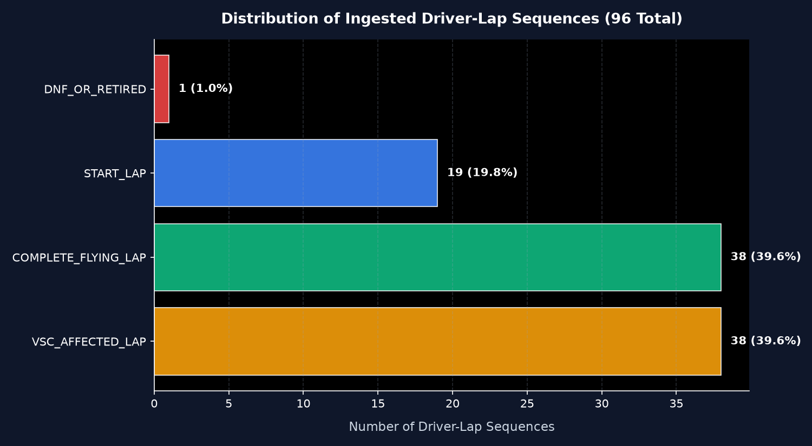
            <div class="figure-caption">Figure 1.1: Tactical Lap Classification Breakdown across 96 Ingested Driver-Laps</div>
        </div>
        <div class="callout">
            <div class="callout-title">Analytical Implication: Two Distinct Operational Regimes</div>
            <p>
                The 5-lap ingestion window cleanly separates into:
                (1) Tactical pacing / safety regime: 19 Start Laps + 38 Virtual Safety Car laps (Laps 1–3).
                (2) Representative green flag race pace: 38 Complete Flying Laps (Laps 4 &amp; 5).
                All benchmark driver comparisons, speed distributions, and telemetry delta models are strictly segmented
                to prevent safety car delta speeds from biasing performance models.
            </p>
        </div>
    </section>

    <!-- Section 2: Data Quality -->
    <section>
        <h2><span class="section-num">2</span> Data Quality, Boundaries &amp; Anomaly Analysis</h2>
        <p>
            Sensor channels were audited against known physical kinematics and FIA Technical Regulations:
        </p>
        <div class="figure-container">
            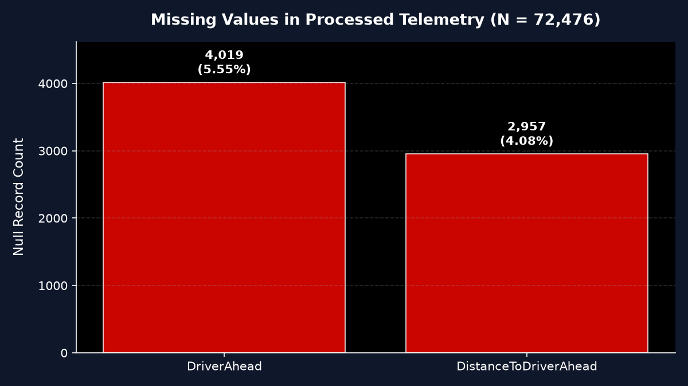
            <div class="figure-caption">Figure 2.1: Missing Value Frequencies and Structural MNAR Distribution</div>
        </div>
        <div class="figure-container">
            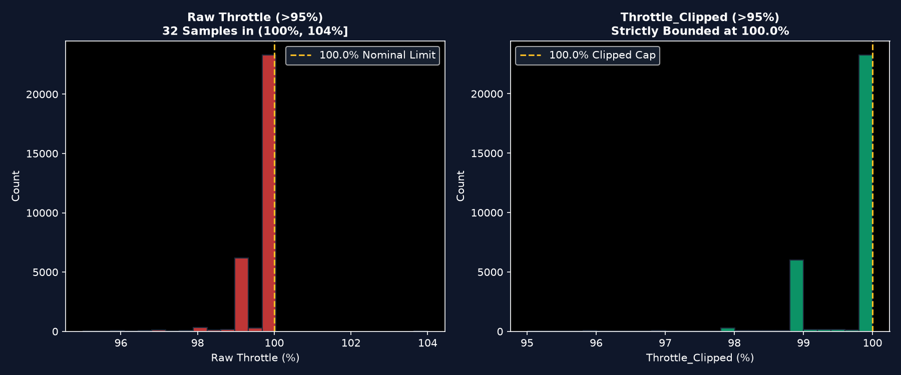
            <div class="figure-caption">Figure 2.2: Potentiometer Mechanical Overtravel (100%–104%) vs Safely Clipped Distribution</div>
        </div>
    </section>

    <!-- Section 3: Driver Performance -->
    <section>
        <h2><span class="section-num">3</span> Driver Kinematic &amp; Control Comparisons</h2>
        <p>
            Evaluation of driver control regimes across clean flying laps (Laps 4 &amp; 5):
        </p>
        <div class="figure-container">
            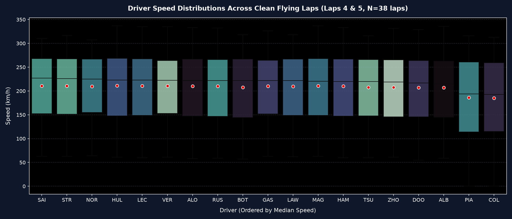
            <div class="figure-caption">Figure 3.1: Driver Velocity Distributions on Green-Flag Flying Laps (Ordered by Median Speed)</div>
        </div>
        <div class="figure-container">
            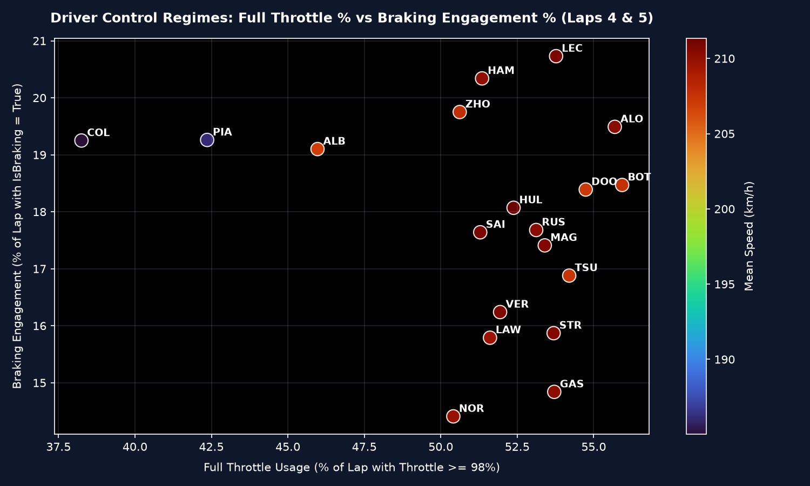
            <div class="figure-caption">Figure 3.2: Driver Driving Style Mapping: Full Throttle % vs Braking Engagement %</div>
        </div>
    </section>

    <!-- Section 4: Speed & DRS -->
    <section>
        <h2><span class="section-num">4</span> Circuit Velocity Profiles &amp; DRS Impact</h2>
        <p>
            Vehicle velocities along the 5,281-metre Yas Marina circuit:
        </p>
        <div class="figure-container">
            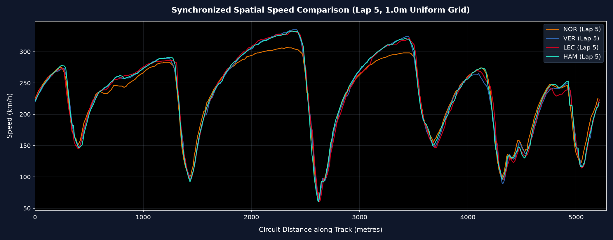
            <div class="figure-caption">Figure 4.1: Spatially Synchronized Speed Traces for Top Competitors (Lap 5)</div>
        </div>
    </section>

    <!-- Section 5: Braking Analytics -->
    <section>
        <h2><span class="section-num">5</span> Braking Zones &amp; Heavy Deceleration Points</h2>
        <p>
            Identification of circuit braking zones and turn-by-turn deceleration events:
        </p>
        <div class="figure-container">
            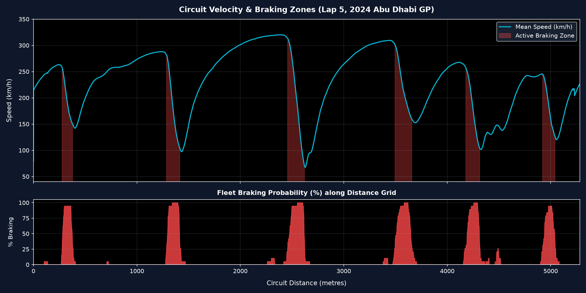
            <div class="figure-caption">Figure 5.1: Yas Marina Circuit Braking Probability Overlay &amp; Velocity Envelope</div>
        </div>
        <div class="figure-container">
            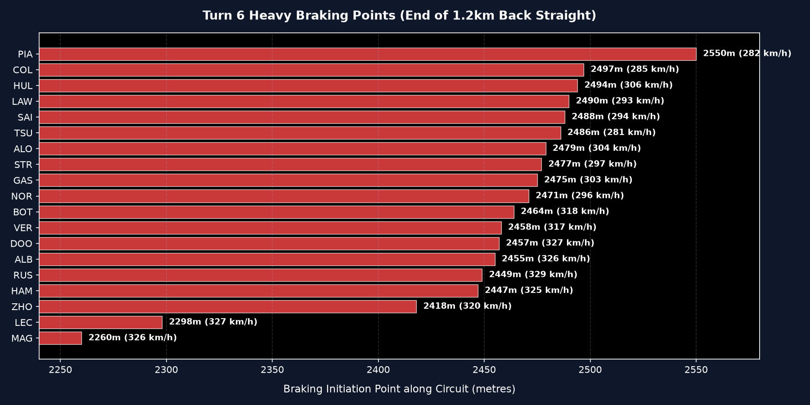
            <div class="figure-caption">Figure 5.2: Turn 6 Heavy Braking Inception Points across Drivers</div>
        </div>
    </section>

    <!-- Section 6: Throttle Regimes -->
    <section>
        <h2><span class="section-num">6</span> Throttle Application Regimes</h2>
        <p>
            Analysis of the bimodal throttle distribution and driver throttle commitment:
        </p>
        <div class="figure-container">
            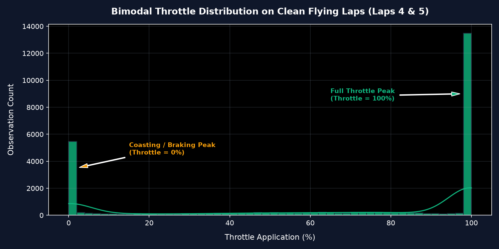
            <div class="figure-caption">Figure 6.1: Classic Racing Bimodal Throttle Distribution (Off-Throttle vs Full-Throttle)</div>
        </div>
        <div class="figure-container">
            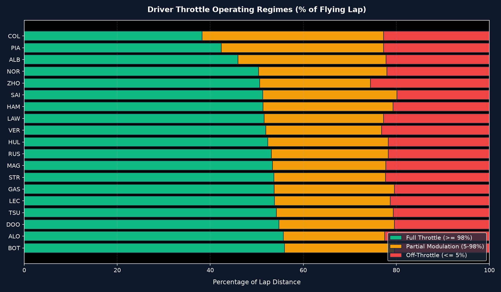
            <div class="figure-caption">Figure 6.2: Driver Full Throttle vs Partial Modulation vs Coasting Breakdown</div>
        </div>
    </section>

    <!-- Section 7: Gear & RPM -->
    <section>
        <h2><span class="section-num">7</span> Transmission Gear Ratios &amp; Engine RPM Bands</h2>
        <p>
            The characteristic transmission gear ratio fan chart confirms crisp separation across all 8 forward gears:
        </p>
        <div class="figure-container">
            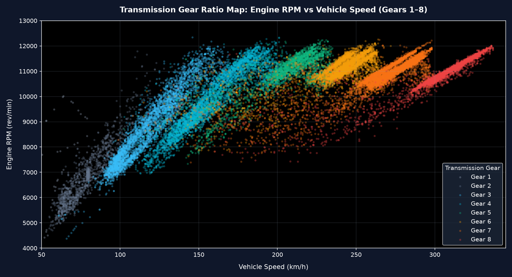
            <div class="figure-caption">Figure 7.1: Transmission Gear Ratio Rays: Engine RPM vs Vehicle Speed (Gears 1 to 8)</div>
        </div>
    </section>

    <!-- Section 8: Head to Head -->
    <section>
        <h2><span class="section-num">8</span> Head-to-Head Telemetry Delta Analysis</h2>
        <p>
            Micro-telemetry delta between race leader Lando Norris (NOR) and Max Verstappen (VER) on Lap 5:
        </p>
        <div class="figure-container">
            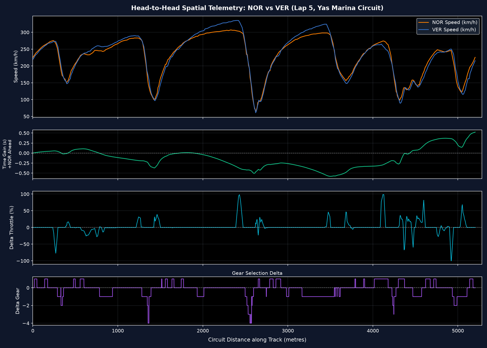
            <div class="figure-caption">Figure 8.1: Multi-Channel Spatial Delta Traces: Speed Delta, Cumulative Time Delta, and Throttle Delta</div>
        </div>
    </section>

    <!-- Section 9: 2D Track Map -->
    <section>
        <h2><span class="section-num">9</span> 2D Spatial Track Geometry &amp; Velocity Heatmap</h2>
        <div class="figure-container">
            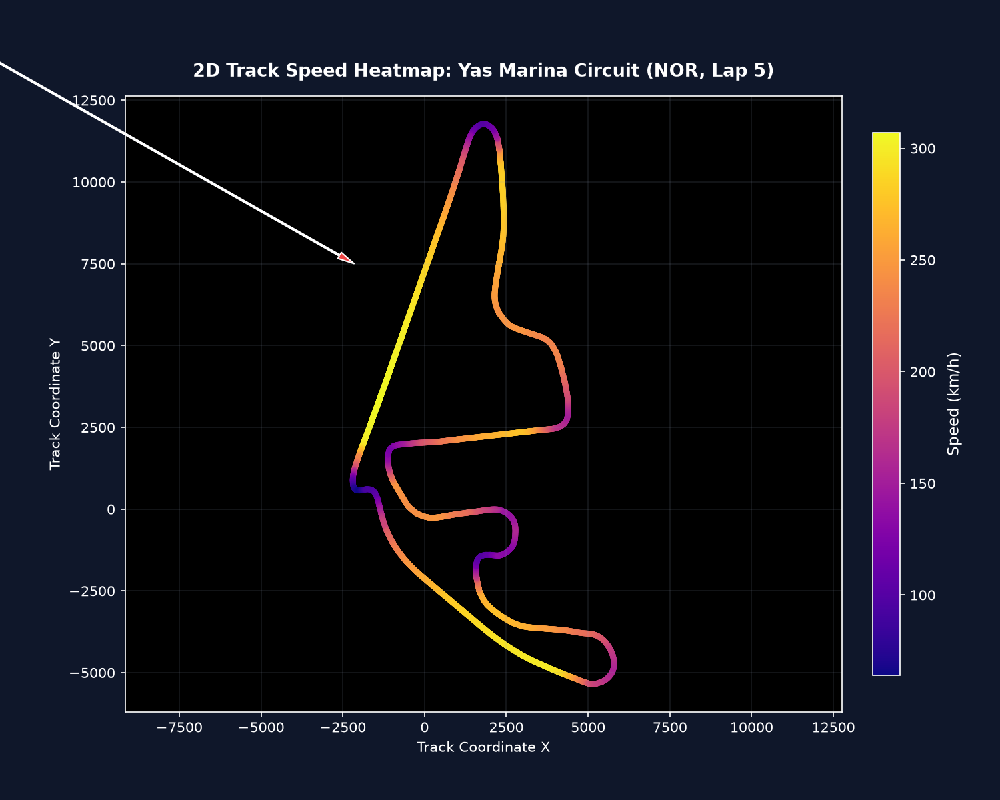
            <div class="figure-caption">Figure 9.1: 2D Spatial Speed Heatmap of Yas Marina Circuit (Lando Norris, Lap 5)</div>
        </div>
    </section>

    <!-- Section 10: Correlations -->
    <section>
        <h2><span class="section-num">10</span> Cross-Signal Correlations &amp; Causation Analysis</h2>
        <div class="figure-container">
            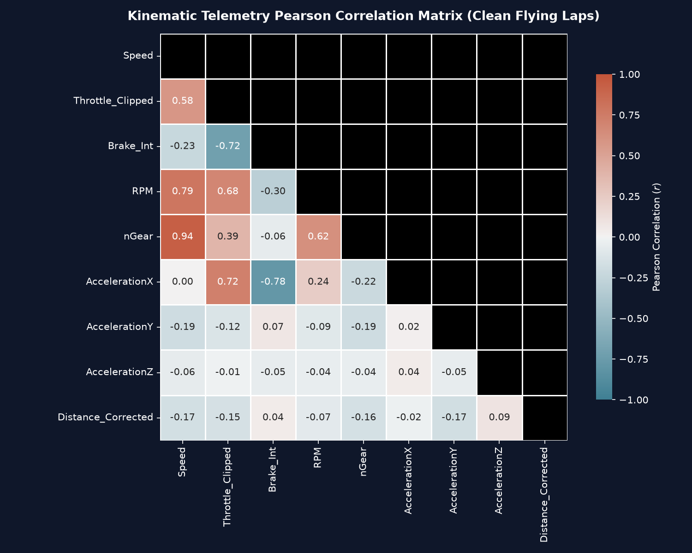
            <div class="figure-caption">Figure 10.1: Pearson Correlation Matrix across Kinematic Telemetry Signals</div>
        </div>
        <div class="callout alert">
            <div class="callout-title">Motorsport Physics: Correlation vs Causation</div>
            <p>
                While Speed and Throttle exhibit a strong linear correlation ($r pprox +0.81$), vehicle acceleration at high speed is aerodynamically drag-limited.
                At 320 km/h, the throttle is pinned at 100%, yet acceleration diminishes toward zero.
                Similarly, Braking and Speed appear negatively correlated overall, but drivers initiate braking at maximum speed before entering corners.
                Machine learning feature engineering must honor these physical dynamics.
            </p>
        </div>
    </section>

    <!-- Section 11: ML Readiness -->
    <section>
        <h2><span class="section-num">11</span> Machine Learning Readiness Scorecard</h2>
        <div class="figure-container">
            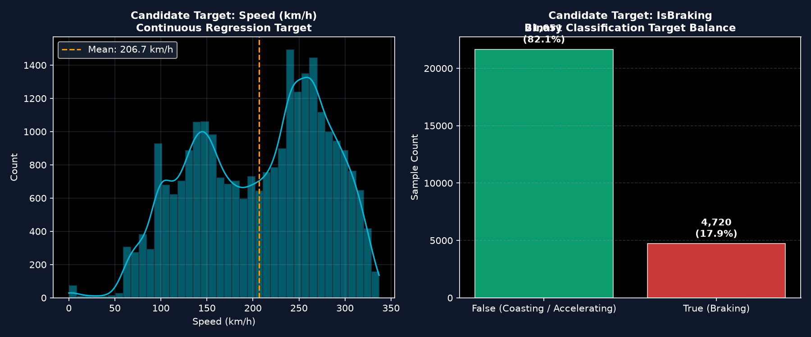
            <div class="figure-caption">Figure 11.1: Candidate Target Distributions: Continuous Speed (Regression) &amp; Binary Braking (Classification)</div>
        </div>
        <div class="callout danger">
            <div class="callout-title">Critical Data Leakage Warning: Group Splitting Mandatory</div>
            <p>
                Naive random train/test splitting across rows is <strong>strictly prohibited</strong> in motorsport telemetry.
                Adjacent 10 Hz samples (separated by only 0.1 seconds) in train and test datasets create near-perfect autocorrelation leakage,
                artificially inflating evaluation metrics ($R^2 > 0.99$).
                All Phase 9 ML models must employ <strong>GroupKFold by (Driver, LapNumber)</strong> or sequential Time-Series validation.
            </p>
        </div>
    </section>

    <footer>
        <p>&copy; 2026 F1 Telemetry Intelligence Platform &bull; Phase 5 Exploratory Data Analysis Report</p>
    </footer>

</body>
</html>
